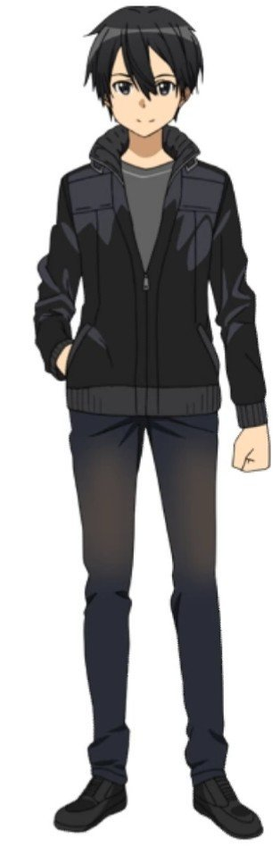
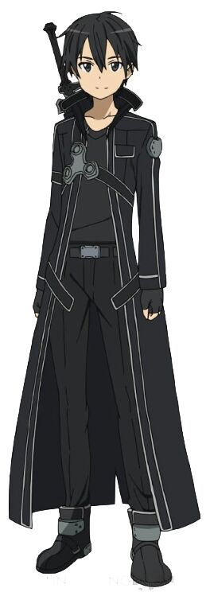
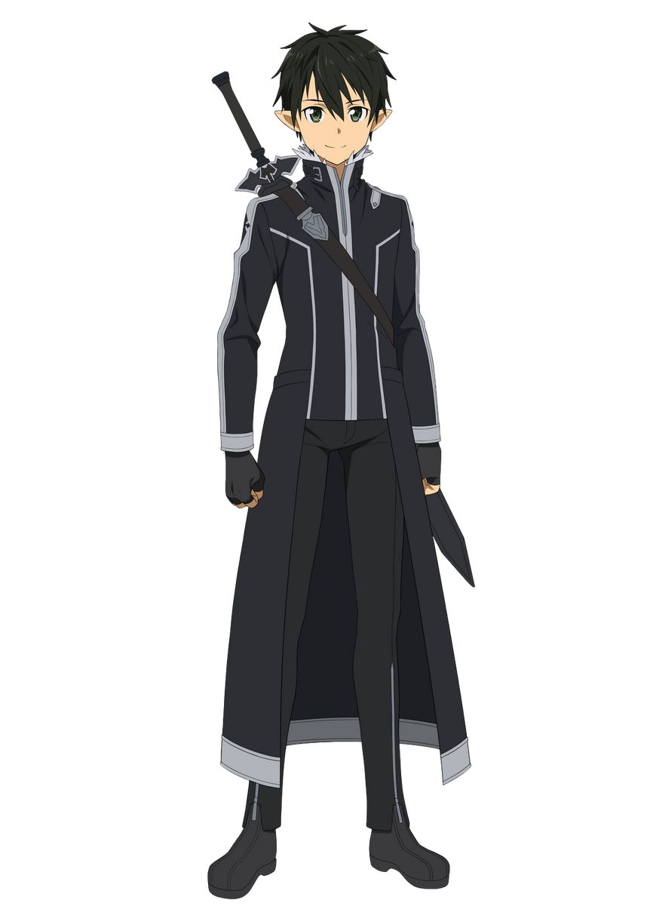
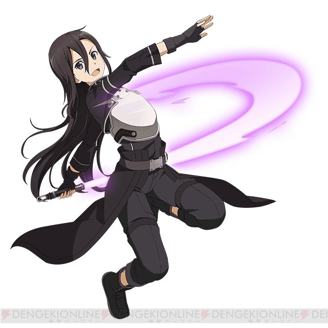
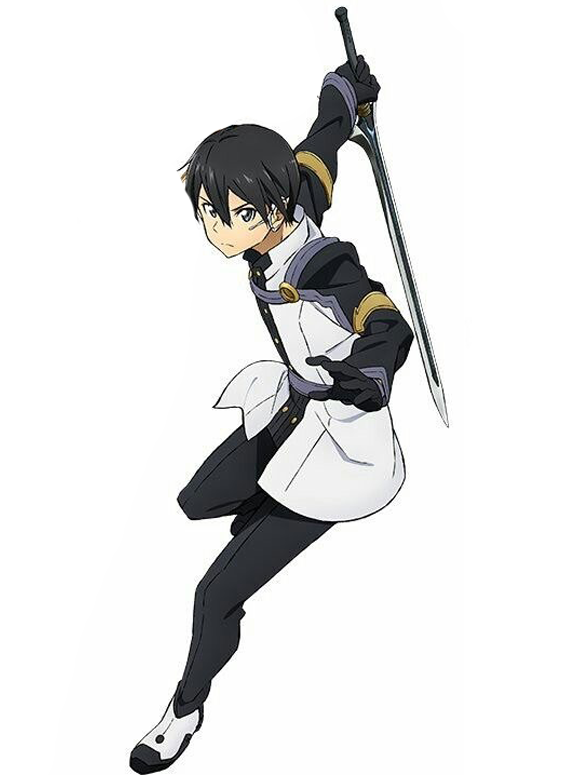

KAZUTO KIRIGAYA
Kazuto Kirigaya ,( Kirigaya Kazuto), mas conocido como Kirito, cuyo apodo surgio a partir de su nombre escrito según la onomástica japonesa es decir Kirigaya Kazuto, es el prota del anime Sword Art Online y un ávido jugador de MMOs RPG de mundo abierto.
APARIENCIAS
    


MUNDO REAL
Kirito posee cabello negro un poco largo pero ordenado y sus ojos son de color negro. Su piel es blanca y es de faccion muy delgada.
SWORD ART ONLINE
Durante el comienzo del juego y durante la prueba beta, su personaje tenía una apariencia de un personaje mayor de lo que realmente era. Después del tutorial de Kayaba Akihiko, su avatar cambió para reflejar su apariencia física real.
ALFHEIM ONLINE
La raza inicial de Kirito en ALfheim era la Spriggan, la cual eligió por la vestimenta de color negro. En lugar de los mechones negros normales que cuelgan de la cabeza de Kirito, su pelo negro se puso en puntas naturales. posee grandes ojos, tenía orejas puntiagudas y alas oscuras.
Después de convertir su avatar de regreso luego de su breve paso por Gun Gale Online, Kirito cambió su estilo de pelo de puntas a su antiguo estilo de SAO, debido a la solicitud de Yui. La razón de la solicitud fue que era difícil para ella sentarse en el pelo de punta.
GUN GALE ONLINE
El avatar de Kirito en Gun Gale Online es del raro tipo M9000, que se especula que es el resultado de un suceso extremadamente raro del sistema, al malinterpretar las ondas cerebrales de los jugadores (el sistema que identifica el sexo del jugador a través de sus ondas cerebrales, pero en raras ocasiones, debido a un impulso, se elige la apariencia del sexo opuesto). Se trata de un avatar que muchos jugadores masculinos sueñan con tener, debido a su apariencia femenina. Él conserva su pelo negro, que ahora fluye hasta los hombros. Él tiene una piel pálida, labios carmesí y brillantes ojos negros rodeados de largas pestañas.
ORDINAL SCALE
...
ALICIZATION
En el comienzo del Proyecto Alicization, Kirito llevaba una camisa azul de manga corta cosida a mano con un corte en forma de V en el pecho, además estaba atada con una cuerda de color marrón claro con pantalones y zapatos de cuero cosidos a mano. Dos años más tarde, después de convertirse en valet en la Academia de Maestría con la Espada, él lleva el uniforme gris estándar, como todos los espadachines primerizos. En el segundo año de la academia, después de que él se convierte en uno de los 12 espadachines de élite, se le permite elegir un color para el uniforme, así que viste un uniforme de tono negro.
ANTECEDENTES
Nació el 7 de octubre de 2008 y fue adoptado por la familia de su tía y tío a causa del fallecimiento de sus padres biologicos en un accidente . Debido a la influencia de su tía como editora de una revista de informática, Kazuto se enamoró de las computadoras y dejó de asistir a sus entrenamientos de kendo después de haberlo practicado dos años.
Kazuto tiene grandes dotes como programador y construccion de aparatos tecnologicos, logrando construir una computadora a partir de piezas durante la escuela primaria, la búsqueda de registros borrados en el registro nacional a la edad de tan solo diez años, y la gestión para detener el servidor de SAO antes de que suprimiera a Yui, convirtiendo su programa en un objeto y almacenándolo en su Nerve Gear, (Casco de realidad aumentada),como datos ambientales.
Actualmente vive con su familia, aunque su tío no está a menudo a su alrededor.
Se crió como hijo de tu tia, con su prima Suguha Kirigaya como su hermana.
Se inclino hacia el
kendo originalmente por
su abuelo,
pero tenía poco interés en este y como resultado su hermana comenzó a ir a kendo por él.
PERSONALIDAD
Kirito es una persona que no suele escoger bien las palabras, como dijo Klein, suele ser muy directo. Esto se debe a que no tiene muchas amistades y se cierra hacia otros, debido a que no es muy sociable y su profundo interes por las computadoras. Esto trae consigo que puede resultar siendo una persona un poco grosera con los demas, como por ejemplo Lisbeth y Sinon. Aunque a veces realmente parece disfrutar de hacer enfadar a la gente. Sin embargo, Kirito es en realidad una persona amable que sólo es entendido incorrectamente. A pesar de la opinión de la población general hacia los Beta Tester de SAO, se negó a abandonar a otro jugador en problemas. Esto sólo pasa después de la desaparición de los Gatos Negros de la Luna Llena. También reconforta a otros que tienen miedo, como Silica después de perder a su mascota Pina. Afirma ayudar a algunas jugadoras de SAO porque le recuerdan a su hermana, con la que se siente culpable por creer que él la obligó a practicar kendo por los dos. Estos actos de bondad le ganaron el respeto y el afecto de muchas chicas. Kirito, a diferencia de los héroes masculinos habituales, no es muy denso.
También es una persona muy emocional y deja que sus emociones lo controlen de vez en cuando. Las muertes de Sachi y los Gatos Negros de la Luna Llena le persiguieron hasta su matrimonio con Asuna. Él se quebró emocionalmente cuando el personaje de Asuna fue asesinado por Heathcliff. Esto preocupa a sus amigos y aliados dado que Kirito es alguien que dejaría que la culpa arruine su vida si no es consolado. También trata de ocultar sus habilidades para no obtener atención innecesaria.
Después de escapar de SAO, Kirito intenta reparar su relación con Suguha, su prima. Esto demuestra que Kirito está tratando de compensar su error del pasado donde hacía caso omiso de ella, mostrando ahora un sentido de madurez. Kirito, más adelante en la serie, se muestra como un jugador tranquilo y maduro.
RELACIONES
...
CRONOLOGIA
ARCO AINCRAD
Kirito fue elegido como uno de los 1.000 Beta Testers para la beta cerrada de Sword Art Online, el primer VRMMORPG existente en el cual es necesario usar el Nerve Gear para acceder a él.
Poco después de que Kirito ingresa a SAO en su lanzamiento oficial, este es detenido por un jugador novato llamado Klein, el cual le pide ayuda para aprender a jugar. Después de que se hacen amigos y entrenan en los campos del piso 1 durante varias horas, repentinamente son teletransportados a la plaza del Pueblo de los Inicios. Ahí el creador y Game Master Kayaba Akihiko les revela la verdad sobre el juego de la muerte. Kirito habiendo aceptado todo lo dicho por Kayaba se apresura en llegar al siguiente pueblo para adquirir ventajas, sin embargo Klein no lo acompaña.
Camino al siguiente pueblo, Kirito decide realizar una misión que tiene como recompensa una espada de la cual tenía conocimiento gracias a la prueba Beta. Durante esta misión se encuentra con Coper, otro beta tester quien le propone formar equipo para terminar la búsqueda mas rápido. Estando cerca de su objetivo Coper traiciona a Kirito activando intencionalmente una trampa de monstruos pero todo le sale mal a Coper y es él quien muere a manos de las criaturas.
Luego de un mes en el juego y sin haber logrado limpiar aun el primer piso, Kirito se encuentra con una misteriosa jugadora dentro de una mazmorra. De repente la chica cae desmayada del agotamiento así que Kirito la lleva a un lugar seguro y posteriormente la invita a que asista a la conferencia estratégica para enfrentar el primer jefe de piso.
Cuando Kirito llega a Tolbana se encuentra de nuevo con la jugadora y se reúnen en la conferencia organizada por otro beta tester llamado Diavel. Kirito decide formar un equipo temporal con la joven que había conocido y se entera de que su nombre es Asuna. Durante el combate con el jefe, Kirito logra dar el último ataque y recibir la recompensa que consistía en el abrigo de medianoche. Kirito es visto con malos ojos por sus muchos conocimientos sobre el juego además de su condición de beta tester y es así como se gana el apodo de beater.
Pese a que durante los primeros meses en el juego Kirito se las había arreglado como un jugador solitario, un día conoció a un pequeño gremio que le llamó la atención y decidió unirse a ellos. El nombre de este grupo era Gatos Negros de la Luna Llena y el nivel de sus miembros estaba muy por debajo del de Kirito. Estando con ellos Kirito entablo una buena relación con la jugadora Sachi. Si embargo esto no duro mucho ya que un día que se encontraban explorando un laberinto cayeron en una trampa de la cual solo salió con vida Kirito.
Pasado el tiempo, aun con el peso de la muerte de sus compañeros, Kirito se enteró acerca de un evento especial de navidad el cual involucraba un objeto de resurrección. De inmediato Kirito hizo todo lo necesario para conseguir dicho ítem derrotando él solo al jefe del evento conocido como Nicolás el Renegado. Por desgracia para Kirito el objeto no funcionaba con personas que llevaran muertas mas de 10 segundos.
La vida de Kirito en la línea delantera continuaba hasta que un día escuchó sobre un gremio que estaba cometiendo Player Killing y decidió ir a los pisos inferiores a investigar. En su paso por el Bosque Laberinto, Kirito salva a una joven jugadora de ser asesinada por un grupo de Simios Borrachos. Sin embargo, el familiar de la chica llamada Silica había muerto minutos antes, así que Kirito se ofrece a ayudarle a revivir a la criatura. Kirito en compañía de la domadora Silica se aventuran hacia la Colina de los Recuerdos donde finalmente obtienen la Flor Pneuma que permite revivir al familiar. En el camino de regreso son emboscados por el gremio que Kirito andaba buscando y que era liderado por Rosalia. Kirito los confronta y gracias a su abrumador nivel los persuade de que vayan a prisión.Cuando la línea de fuego ya se ubicaba por encima de los cincuenta pisos, tras una reunión estratégica de clearers, Kirito vuelve a cruzar caminos con Asuna y ambos se ven involucrados en un extraño caso de asesinatos en una ciudad. Estos hechos tienen que ver con un antiguo gremio llamado Manzana Dorada. Gracias a las investigaciones hechas por Kirito y Asuna logran descubrir la verdad detrás de las supuestas muertes.
Otro día, Kirito decide ir en busca de una segunda espada y para ello visita la herrería de Lisbeth. Estando ahí, Kirito le pide a la joven una espada igual o mejor que su actual Elucidator pero ninguna de las espadas ya fabricadas por Lisbeth cumple sus expectativas así que Kirito y la chica viajan a la frías montañas donde habita X'rphan el Wyrm Blanco para buscar un material especial. Luego que lo consiguen la espada Dark Repulser es forjada.
Después de dos años dentro de SAO, Kirito se reúne de nuevo con la sublíder de los Caballeros de la Hermandad de la Sangre Asuna y ambos quedan de ir a explorar el laberinto del piso 74. Cuando los dos llegan a la habitación del jefe y echan un vistazo al demonio de ojos azules no tienen mas remedio que retirarse a la zona segura. Estando ahí, aparece ante ellos un grupo de El Ejercito que posteriormente se encamina a enfrentar al jefe. Tanto Kirito como Asuna regresan a la sala del jefe y ven como los miembros de El Ejercito están en problemas así que Kirito se ve obligado a usar su habilidad doble empuñadura para acabar con el monstruo.
Después que el piso 75 es inaugurado, Kirito se reúne con Heathcliff, el líder de los Caballeros de la Hermandad de la Sangre para interceder por Asuna quien había solicitado permiso para ausentarse temporalmente del gremio, pero Heathcliff dice que sólo se lo concederá si Kirito lo derrota en un duelo. Además si Kirito pierde, tendrá que unirse al gremio. Kirito acepta el reto y está a punto de ganar, pero en el último momento Heathcliff se mueve a una velocidad imposible. El duelo termina con la pérdida de Kirito, obligándolo a cumplir con su acuerdo.
Pocos días después de unirse al gremio, Kirito es enviado a un entrenamiento obligatorio junto con otros miembros. Durante este ejercicio, él y los otros dos son traicionados por Kuradeel. Kuradeel mata a los demás y deja a Kirito para el final, pero Asuna apenas logra salvarlo. Ella deja vivir a Kuradeel, pero él los ataca de nuevo y Kirito se ve obligado a matarlo. Después de esto, Kirito expresa sus sentimientos hacia Asuna y de nuevo le piden permiso a Heathcliff para ausentarse. Los protagonistas se casan y van de luna de miel al piso 22.
Mientras Kirito pasa su luna de miel junto Asuna, recibe un rumor de un fantasma en el bosque y decide ir a ver. Ellos encuentran en el bosque a una pequeña de nombre Yui, la cual para su sorpresa, resulta ser una inteligencia artificial destinada a controlar la salud mental de los jugadores de SAO. Asuna y Kirito deciden adoptar a Yui como su hija. Adicionalmente Kirito guarda el programa de Yui en la memoria local de su NerveGear par evitar que sea eliminado por el sistema.
Después de la segunda semana de su luna de miel Kirito recibe el aviso de que la sala del jefe del piso 75 ya ha sido encontrada, así que él y Asuna regresan a la línea delantera y participan en la batalla. Después del largo combate Kirito sospecha del misterioso poder de Heathcliff y pone al descubierto que se trata de Kayaba Akihiko. Ante esto Kirito tiene un duelo a muerte contra Heathcliff donde está en juego la liberación de Aincrad, pero la espada de Kirito se rompe en un momento clave. Cuando Kayaba iba a propinarle el golpe final, Asuna se interpone y muere.
Desconsolado por la muerte de Asuna, Kirito entra en shock y seguidamente es atravesado por la espada de Heathcliff. Sin embargo, Kirito no consigue aceptar su muerte y se opone con todas sus fuerzas al sistema, dándole tiempo suficiente para tomar la espada de Asuna y atravesar a Kayaba. Ambos desaparecen y mas tarde Kirito, Asuna y Kayaba aparecen en un plataforma flotante en el cielo de Aincrad y presencian la destrucción del mundo de las espadas. Kirito despierta en la cama de un hospital y se promete encontrar a Asuna ahora que ha vuelto al mundo real.
ARCO FAIRY DANCE
Dos meses después de que Kazuto regresa al mundo real, él afianza su relación de hermanos con Suguha, considerando incluso volver a practicar kendo junto con ella. Kazuto además ha descubierto que Asuna aun sigue dormida con el NerveGear, así que cada que tiene oportunidad va ha visitarla al hospital, aunque en una de esas visitas conoce a Shouzou Yuuki, el padre de Asuna y a Nobuyuki Sugou, prometido de Asuna.
En los siguientes días, Kazuto recibe un correo electrónico de Agil con una captura de pantalla del juego ALfheim Online donde se ve a Asuna en una jaula de oro. Ante esto, Kazuto decide entrar a este nuevo mundo virtual como el Spriggan Kirito. Ya en ALfheim, Kirito descubre que sus estadísticas y habilidades son las mismas que tenía en SAO y encuentra además dentro de su inventario el objeto MHCP001 (Yui). A las pocas horas de haber iniciado el juego, Kirito tiene un encuentro con un grupo de Salamanders, al cual derrota fácilmente con su inigualable velocidad y también termina haciéndose amigo de una jugadora Sylph llamada Leafa.
Mas tarde, Kirito en compañía de Leafa inician un viaje hacia el Árbol del Mundo, lugar donde Kirito presiente que se encuentra Asuna. Cuando ambos llegan al Corredor Lugru se dan cuenta de que han sido seguidos por 12 Salamander y se ven obligados a luchar. Por fortuna Kirito usa una poderosa magia que lo convierte en una criatura gigante y logra controlar la situación. Después de interrogar a uno de los salamander, Kirito se entera de una emboscada que tienen planeada los salamander contra las lideres de las razas Sylph y Caith Sith.